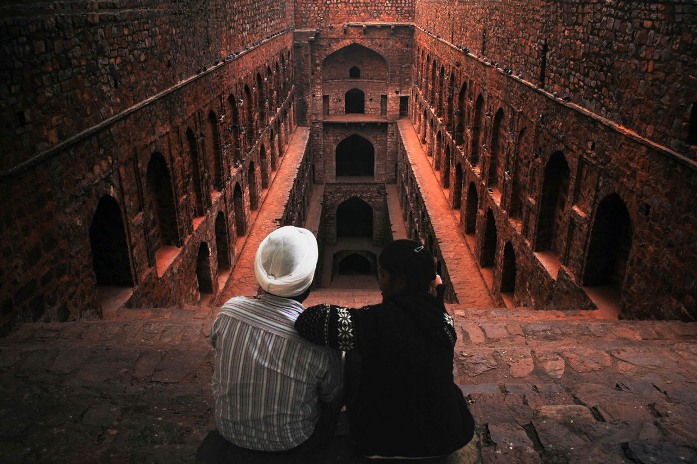

DELHI
1.Lotus Temple
2.Red Fort
3.Qutub Minar
4.Humayun's Tomb
5.Chhatarpur Temple
6.Rastrapathi Bhavan
7.Agrasen Ki Baoli

8.Lodi Gardens
9.Gandhi Smriti and Darshan Samiti
10.Garden of five senses